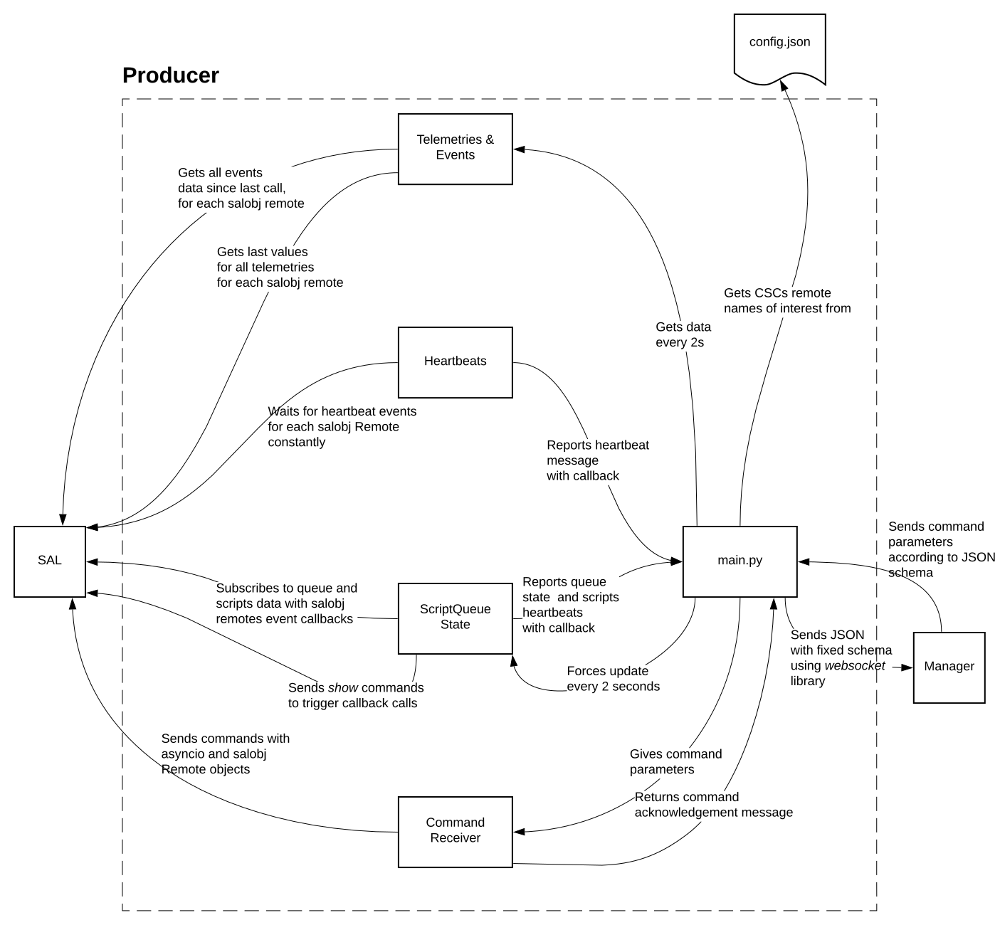

How it works¶
The LOVE-Producer consists of several python classes (Telemetries and Events, Heartbeats, ScriptQueue State, Command Receiver and Initial State), each refered to as “a Producer”, and a main.py python script . Each Producer provides an interface to extract specific information from the SAL parsed into a dictionary with a fixed schema. These messages are given to/requested by the main.py script which is the main driver of the LOVE-producer program in charge of handling the websockets communication with the LOVE-manager, converting these messages to JSON format and forwarding them to the LOVE-manager.
The main.py file¶
It uses the websocket library to send messages to the ws://<WS_HOST>/?password=<WS_PASS> URL, where WS_HOST and WS_PASS are read from environment variables. It configures each Producer according to the config.json and extracts data by either passing callbacks or making direct calls to message getters functions to send a dictionary in JSON format to the specified address. This is detailed in the next sections and also on the diagram at the top of the page. The JSON schema is consistent with the what the LOVE-manager expects and has this structure:
Telemetries and Events producer¶
It creates a salobj.Remote object for a list of (CSC, salindex) pair given as input (created in the main.py from the config.json file). It provides a get_telemetry_message that returns a dict containing the last value of each telemetry on each salobj.Remote, and a get_events_message that similarly extracts all events data a The main.py. These two methods are called by the main.py every two seconds.
Heartbeats producer¶
Reports to the main.py through a callback message containing info about the heartbeat (generic) event of a list of (CSC, salindex) pairs. The information contained in a heartbeat message consists of :
Number of consecutive heartbeat lost, i.e., count of times
remote.evt_heartbeat.nextthrows aTimeouterror.Timestamp of the last received heartbeat. Defaults to
-1(never received heartbeat) and-2if the topic does not have aheartbeatevent.Maximum number of heartbeats configured to be acceptable by the frontend.
ScriptQueue State producer¶
Monitors the queue state, creating instances of the ScriptQueue and Script salobj.Remote objects, storing their states. It configures several callbacks that allow to update the stored state, and reports to the main.py with a callback that sends a message with the state whenever any of these are called. It also monitors heartbeats of each script similarly to the heartbeats Producer. Finally, additional to callbacks, it provides an update method that sends show commands to the SAL for the ScriptQueue and each Script remote, triggering updates of the queue state. This update method is called every 2 seconds by the main.py script.
Commands receiver¶
It provides a process_message function that the main.py script calls whenever it receives a command message from the LOVE-manager. This method uses this information to produce a command with salobj.Remote and then returns back to the manager an acknowledgment message if the command runs succesfuly.
Initial State Producer¶
Produces LOVE messages with the latest info of an event. It first loads several remotes in the constructor and then produces messages for the LOVE-manager through the process_message function everytime a request is received in the websocket on_message event.